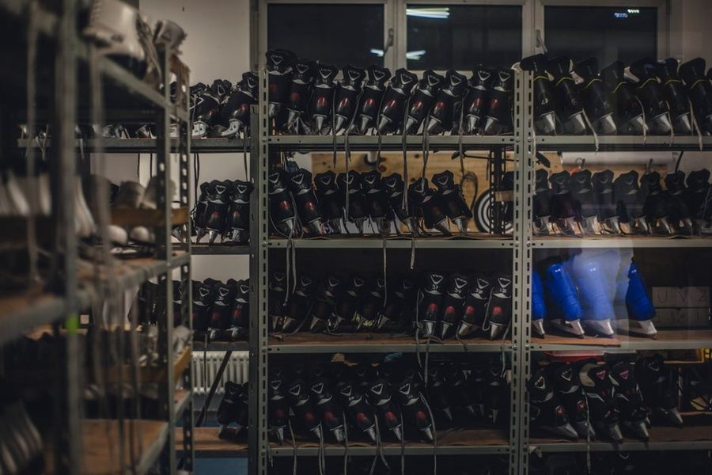

Um caderno pequeno, escrito por gente que administra a própria casa e cansou de método desenhado para um dia que a semana não tem.

O Plano Claro começou como um arquivo de anotações compartilhado entre três pessoas que trocavam soluções práticas de rotina doméstica: como dividir faxina sem discussao, como impedir que a papelada virasse pilha, como cozinhar uma vez e comer bem por três dias. Quando o arquivo passou de cinquenta páginas, virou site.
Todo texto sai de prática, não de pesquisa de escritório. Quando uma recomendação não se sustenta depois de algumas semanas em casa, ela e corrigida no próprio texto, com a data da revisão. Não publicamos lista de dicas genérica nem promessa de transformação.
Também evitamos número inventado. Quando citamos tempo (vinte minutos por cômodo, quinze minutos de revisão), é a medida que usamos de fato, e ela pode não servir para a sua casa. O caderno oferece formato, não garantia.
Não vendemos produto próprio, não mantemos loja e não aceitamos texto pago disfarçado de conteúdo editorial. Se houver publicidade na página, ela será identificada. Não temos vínculo com lojas, fabricantes, bancos ou plataformas eventualmente citados nos textos.
Críticas, correções e sugestões de pauta são bem-vindas pelo endereço contato [arroba] planoclaro ponto shop. Não respondemos dúvida individual sobre a rotina de cada casa, mas lemos tudo e usamos como pauta.
Erro factual corrigido ganha nota no fim do texto com a data. Ajuste de recomendação (quando a prática desmente o que escrevemos) também. Preferimos deixar o rastro visível a fingir que o texto sempre esteve certo.